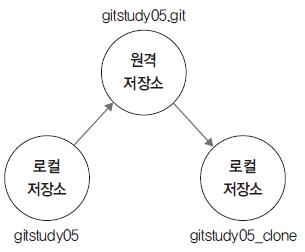

이번에는 반대로 원격 저장소에서 커밋된 코드를 내려받는 방법을 알아보겠습니다.
복제는 기존 저장소를 이용하여 새로운 저장소를 생성하는 방법 중 하나입니다. 하지만 일반적인 복제와 원격 저장소를 복제하는 방법은 조금 차이가 있습니다. 몇 가지 추가 정보를 같이 설정해야 합니다.
복제할 때는 clone 명령어를 사용합니다. clone 명령어는 초기화 init 명령어 외에 원격 서버 접속에 필요한 추가 설정을 자동으로 수행합니다. 서버의 연결 설정을 마친 후 서버 안에 있는 모든 커밋된 코드 이력들을 한 번에 내려받습니다.
앞에서 업로드한 원격 저장소를 다른 이름의 로컬 저장소로 복제해 보겠습니다.
$ cd 메인폴더
$ mkdir gitstudy05_clone
$ cd gitstudy05_clone/
infoh@hojin MINGW64 /e/gitstudy05_clone
$ git clone https://github.com/jinygit/gitstudy05.git .
Cloning into '.'...
remote: Enumerating objects: 3, done.
remote: Counting objects: 100% (3/3), done.
remote: Total 3 (delta 0), reused 3 (delta 0), pack-reused 0
Unpacking objects: 100% (3/3), done.
infoh@hojin MINGW64 /e/gitstudy05_clone (master)
$ ls -all
total 13
drwxr-xr-x 1 infoh 197609 0 12월 12 17:23 .
drwxr-xr-x 1 infoh 197609 0 12월 12 17:23 ..
drwxr-xr-x 1 infoh 197609 0 12월 12 17:23 .git
-rw-r--r-- 1 infoh 197609 14 12월 12 17:23 README.md
원격 서버를 정상적으로 복제했습니다. 복제 후 remote 명령어를 사용하여 원격 저장소 정보를 확인합니다.
infoh@gitstudy MINGW64 /e/gitstudy05_clone (master)
$ git remote -v
origin https://github.com/jinygit/gitstudy05.git (fetch)
origin https://github.com/jinygit/gitstudy05.git (push)
remote로 확인하면 연결된 서버 설정들이 표시됩니다. 로컬 저장소를 생성한 후, 처음으로 서버에서 코드를 내려받을 때는 clone 명령어를 사용하면 좀 더 편리합니다.
그림 5-9] 원격 저장소와 로컬 저장소 연결

복제는 원격 저장소에서 모든 내용을 한 번에 내려받습니다. 복제 후 원격 저장소의 갱신된 내용을 추가로 내려받으려면 pull 명령어를 사용해야 합니다.
pull 명령어는 로컬 저장소보다 최신인 갱신된 원격 저장소의 커밋 정보를 현재 로컬 저장소로 내려받습니다. pull 명령어를 주기적으로 사용하면 최신 커밋 정보로 로컬 저장소를 유지할 수 있습니다.
$ git pull
실습을 위해 원본 로컬 저장소로 이동합니다.
infoh@gitstudy MINGW64 /e/gitstudy05_clone (master)
$ cd ../ gitstudy05 ☜ 폴더 이동
infoh@gitstudy MINGW64 /e/gitstudy05 (master)
$ code server.htm ☜ VS Code 실행
server.htm
<h1>서버 실습입니다.</h1>
<h2>오늘도 좋은 하루입니다.</h2>
작성한 server.htm 파일을 커밋합니다.
infoh@hojin MINGW64 /e/gitstudy05 (master)
$ git add server.htm
infoh@hojin MINGW64 /e/gitstudy05 (master)
$ git commit -m "good day"
[master 6a947b8] good day
1 file changed, 2 insertions(+)
create mode 100644 server.htm
커밋한 내용을 원격 저장소(서버)로 업로드합니다.
infoh@hojin MINGW64 /e/gitstudy05 (master)
$ git push origin master ☜ 푸시, 원격 서버로 전송
Enumerating objects: 4, done.
Counting objects: 100% (4/4), done.
Delta compression using up to 8 threads
Compressing objects: 100% (3/3), done.
Writing objects: 100% (3/3), 341 bytes | 341.00 KiB/s, done.
Total 3 (delta 0), reused 0 (delta 0)
To https://github.com/jinygit/gitstudy05.git
4864581..6a947b8 master -> master
방금 작성한 코드와 커밋으로 원격 저장소를 갱신했습니다. 갱신된 원격 저장소의 커밋을 복제한 저장소에도 동기화합시다.
복제된 저장소로 이동합니다. 복제된 저장소에서 커밋 로그를 확인해 보겠습니다.
$ cd ../ gitstudy05_clone/
infoh@hojin MINGW64 /e/gitstudy05_clone (master)
$ git log
commit 486458111de5ec909e43460ec8ebf945ba9e932c (HEAD -> master, origin/master, origin/HEAD)
Author: hojinlee <infohojin@gmail.com>
Date: Thu Dec 12 17:16:37 2019 +0900
first commit
복제된 저장소에는 아직 커밋 하나만 있습니다. 이번에는 원격 저장소에서 갱신된 새 커밋 정보를 가지고 옵니다.
infoh@hojin MINGW64 /e/gitstudy05_clone (master)
$ git pull ☜ 서버에서 정보를 가지고 옵니다
remote: Enumerating objects: 4, done.
remote: Counting objects: 100% (4/4), done.
remote: Compressing objects: 100% (3/3), done.
remote: Total 3 (delta 0), reused 3 (delta 0), pack-reused 0
Unpacking objects: 100% (3/3), done.
From https://github.com/jinygit/gitstudy05
4864581..6a947b8 master -> origin/master
Updating 4864581..6a947b8
Fast-forward
server.htm | 2 ++
1 file changed, 2 insertions(+)
create mode 100644 server.htm
pull 명령어는 원격 저장소에 갱신된 커밋을 로컬 저장소의 커밋 정보와 비교하여 갱신합니다. 원격 저장소에서 복제된 저장소를 동기화했습니다. 이제 다시 복제된 저장소에서 log 명령어를 실행합니다.
infoh@hojin MINGW64 /e/gitstudy05_clone (master)
$ git log
commit 6a947b89517661cde95c9bec4c766302a763437e (HEAD -> master, origin/master, origin/HEAD)
Author: hojinlee infohojin@gmail.com ☜ 2번째 커밋 정보를 내려받았습습니다
Date: Thu Dec 12 17:28:20 2019 +0900
good day
commit 486458111de5ec909e43460ec8ebf945ba9e932c
Author: hojinlee <infohojin@gmail.com>
Date: Thu Dec 12 17:16:37 2019 +0900
first commit
복제된 저장소에 새로 추가된 커밋을 확인할 수 있습니다. 이처럼 pull은 원격 저장소와 로컬 저장소 간 커밋을 반영할 수 있습니다.